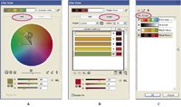

Live Color overview
You use the Live Color dialog box to create and edit color groups, as well as reassign or reduce the colors in your artwork. All of the color groups that you create for a particular document appear in the Color Groups storage area of the Live Color dialog box (as well as the Swatches panel). You can select and use these color groups at anytime.

- A.
- Create and edit a color group in the Edit tab
- B.
- Assign colors in the Assign tab
- C.
- Select a color group from the Color Groups list
The Recolor Art option at the bottom of the dialog box lets you preview colors on selected artwork, and specifies whether or not artwork is recolored when you close the Live Color dialog box.
The main areas of the Live Color dialog box are:
- Edit
- Use the Edit tab to create new color groups or edit existing color groups. Use the harmony rule menu and the color wheel to experiment with color harmonies. The color wheel shows you how colors in a harmony are related, while the color bars let you see and manipulate individual color values. In addition, you can adjust brightness, add and remove colors, save color groups, and preview the colors on selected artwork.
- Assign
- Use the Assign tab to view and control how colors from a color group replace original colors in your artwork. You can assign colors only if you have artwork selected in the document. You can specify which new colors replace which current colors, whether spots are preserved, and how colors are replaced (for example, you can replace colors entirely or replace hue while retaining brightness). Use Assign to control how artwork is recolored with the current color group or to reduce the number of colors in the current artwork.
- Color Groups
- Lists all saved color groups for the open document (these same color groups appear in the Swatches panel). While in the Live Color dialog box, you can edit, delete, and create new color groups using the Color Groups list. All your changes are reflected in the Swatches panel. The selected color group denotes which color group is currently being edited. You can select any color group and edit it or use it to recolor selected artwork. Saving a color group adds the group to this list.
For a video on creating, editing, and experimenting with color groups in Live Color, see www.adobe.com/go/vid0059. For a video on integrating Live Color with smart objects in Photoshop and InDesign, see www.adobe.com/go/vid0191.
 Open the Live Color dialog box
Open the Live Color dialog box
 Open the Live Color dialog box from
any of the following locations:
Open the Live Color dialog box from
any of the following locations: - Edit > Edit Colors > Recolor Artwork or Recolor With Presets command
- Use these commands when you want to edit colors in selected artwork.
- Edit Colors button
 in
Control panel
in
Control panel -
Use this button when you want to edit the colors of the
selected artwork using the Live Color dialog box. This button is
available when the selected artwork contains two or more colors.
Note: Editing colors this way is a convenient way to globally adjust colors in artwork when global colors weren't used in the artwork's creation.
- Edit Colors button in
Color Guide panel
- Click this button when you want to edit the colors in the Color Guide panel, or apply the colors in the Color Guide panel to selected art.
- Edit Color Group button in
Swatches panel
- Double-click a color group in the Swatches panel or select a group and click this button when you want to edit colors in a color group in the Swatches panel.
Work with the Color Group list
- To show or hide the Color Group list, click the Hide Color Group Storage icon on the right side of the Live Color dialog box. To display the list again, click the icon again.
- To add a new color group to this list, create or edit
a color group, and then click New Color Group
 . A
new color group appears in the list.
. A
new color group appears in the list. - To edit an existing color group, click it in the list to select it. Make changes to the color group using the Edit tab, and then click Save Changes To Color Group .
- To delete a color group, select it and click Delete Color
Group
 .
.